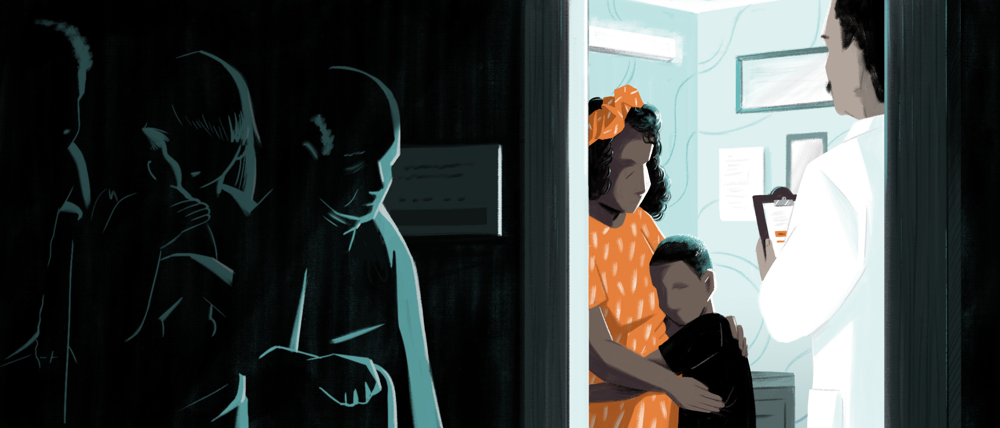
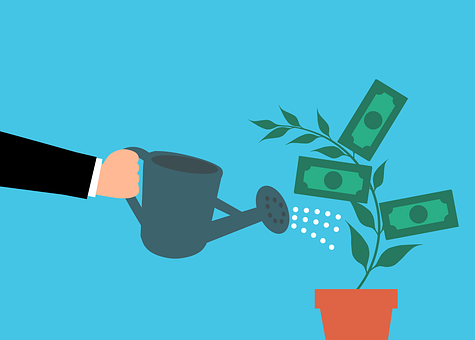

"Access to primary care services" is crucial for individuals to stay safe during a global pandemic, but the lower socioeconomic status prevalent in minority groups affects their ability to access healthcare.(Arnett et al. 2016). The consequences of limited access to such services are alarming, with 78% of deaths under 21 from COVID-19 occurring in minority groups, even among younger generations(Dyer 2020). This disparity in healthcare access and outcomes is not limited to COVID-19, as minority groups often face lower socioeconomic status, resulting in reduced insurance coverage and higher copays for treatment, ultimately leading to reduced access to quality healthcare. Such economic challenges exacerbate the already-existing gap between the impact of COVID-19 on minority groups versus their white counterparts.
Due to the proclivity for ethnic minority groups to have a lower socioeconomic status, additional issues facing those endeavoring to survive the pandemic is the ability to minimize contact with possibly infected individuals. Common ways many people of higher socioeconomic status stayed safe was by working from home and remaining physically distant from others in the workplace or even at home. However, many of these people are working in the service industry or other high contact jobs, which lack the flexibility of being able to work from home or leave their high contact jobs due to lack of any meaningful savings due to these jobs being typically lower paying, which “puts them at a higher risk of exposure to the virus” (CDC, 2020). In addition, lower income housing often is crowded and thus even if one member of the household worked they would have a high probability of infecting the whole family, because “in some cultures it is common for family members of many generations to live in one household” (CDC, 2020). The typically lower household savings held by minority groups leads these individuals to go to work and not complain about hazardous working conditions in order to maintain a household income to cover the costs of living through the pandemic. Even in the medical field it was found that doctors who worked in BAME communities were “twice as likely as white doctors to feel pressured to see patients in high-risk settings without adequate personal protective equipment” (Kirby, 2020).

